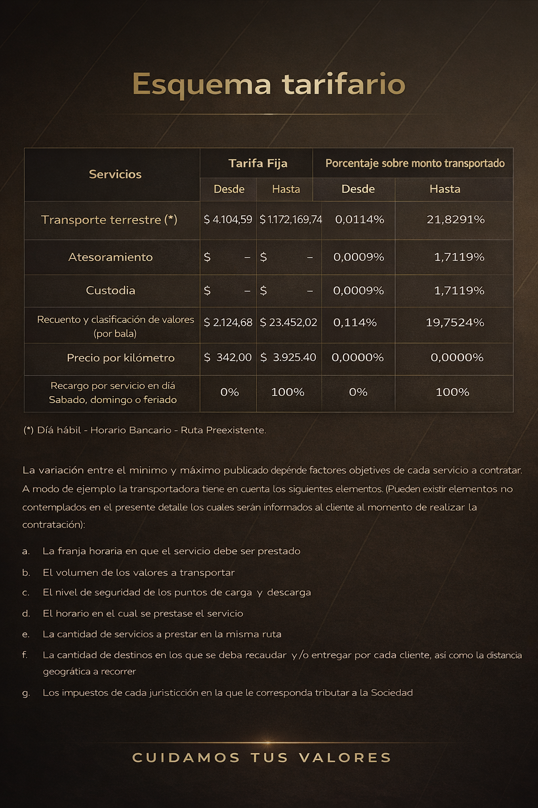

×
↑

Esquema tarifario
Esquema tarifario
Valores expresados en pesos argentinos.
| Servicios | Tarifa Fija | Porcentaje sobre monto transportado | ||
|---|---|---|---|---|
| Desde | Hasta | Desde | Hasta | |
| Transporte terrestre (*) | $ 4.104,59 | $ 1.172.169,74 | 0,0114% | 21,8291% |
| Atesoramiento | $ - | $ - | 0,0009% | 1,7119% |
| Custodia | $ - | $ - | 0,0009% | 1,7119% |
| Recuento y clasificación de valores (por bala) | $ 2.124,68 | $ 23.452,02 | 0,114% | 19,7524% |
| Precio por kilómetro | $ 342,00 | $ 3.925,02 | 0,0000% | 0,0000% |
| Recargo por servicio en día Sábado, domingo o feriado | 0% | 100% | 0% | 100% |
(*) Día hábil - Horario Bancario - Ruta preexistente.
La variación entre el mínimo y máximo publicado depende de factores objetivos de cada servicio a contratar.
A modo de ejemplo, la transportadora tiene en cuenta los siguientes elementos. (Pueden existir elementos no contemplados en el presente detalle los cuales serán informados al cliente al momento de realizar la contratación):
- La franja horaria en que el servicio debe ser prestado.
- El volumen de los valores a transportar.
- El nivel de seguridad de los puntos de carga y descarga.
- El horario en el cual se presta el servicio.
- La cantidad de servicios a prestar en la misma ruta.
- La cantidad de destinos en los que se deba recaudar y/o entregar por cada cliente, así como la distancia geográfica a recorrer.
- Los impuestos de cada jurisdicción en la que le corresponda tributar a la Sociedad.
CUIDAMOS TUS VALORES